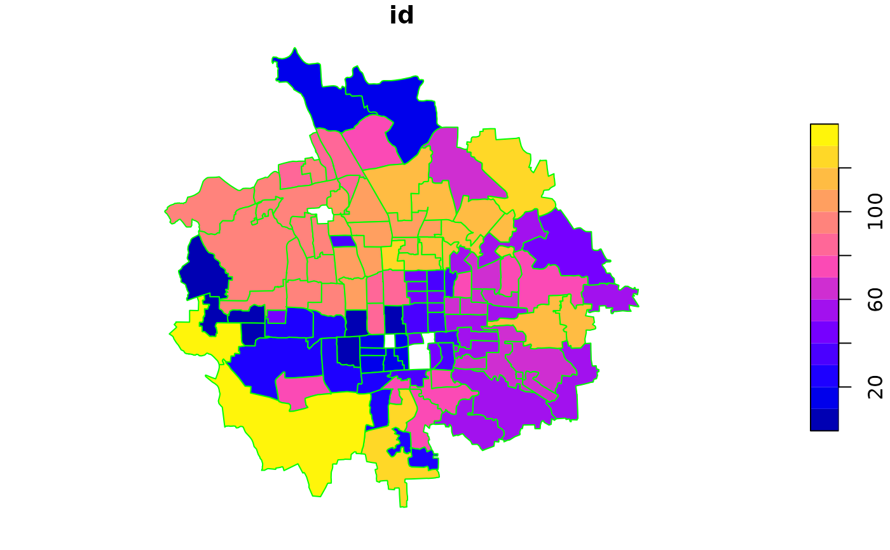

The specification of a HSAR model is as follows: $$y_{i,j} = \rho *\mathbf{W}_i *\mathbf{y} + \mathbf{x}^\prime_{i,j} * \mathbf{\beta} + \mathbf{z}^\prime_j * \mathbf{\gamma} + \theta_j + \epsilon_{i,j} $$ $$\theta_j = \lambda * \mathbf{M}_j * \mathbf{\theta} + \mu_j $$ $$\epsilon_{i,j} \sim N(0,\sigma_e^2), \hspace{2cm} \mu_j \sim N(0,\sigma_u^2)$$ where \(i=1,2,...,n_j\) and \(j=1,2,...,J\) are indicators of lower- and higher-level spatial units. \(n_j\) is the number of lower-level units in the \(j-th\) higher level unit and \(\sum_{j=1}^J=\mathbf{N}\). \(\mathbf{x}^\prime_{i,j}\) and \(\mathbf{z}^\prime_j\) represent vectors of lower- and higher-level independent variables. \(\mathbf{\beta}\) and \(\mathbf{\gamma}\) are regression coefficients to estimate. \(\mathbf{\theta}\), a \(N \times J\) vector of higher-level random effects, also follows a simultaneous autoregressive process. \(\mathbf{W}\) and \(\mathbf{M}\) are two spatial weights matrices (or neighbourhood connection matrices) at the lower and higher levels, defining how spatial units at each level are connected. \(\rho\) and \(\lambda\) are two spatial autoregressive parameters measuring the strength of the dependencies/correlations at the two spatial scales. A succinct matrix formulation of the model is, $$\mathbf{y} = \rho * \mathbf{W} * \mathbf{y} + \mathbf{X} * \mathbf{\beta} + \mathbf{Z} * \mathbf{\gamma} + \Delta * \mathbf{\theta} + \mathbf{\epsilon} $$ $$\mathbf{\theta} = \lambda * \mathbf{M} * \mathbf{\theta} + \mathbf{\mu}$$ It is also useful to note that the HSAR model nests a standard (random intercept) multilevel model model when \(\rho\) and \(\lambda\) are both equal to zero and a standard spaital econometric model when \(\lambda\) and \(\sigma^2_u\) are both equal to zero.
Usage
hsar(
formula,
data = NULL,
W = NULL,
M = NULL,
Delta,
burnin = 5000,
Nsim = 10000,
thinning = 1,
parameters.start = NULL
)Arguments
- formula
A symbolic description of the model to fit. A formula for the covariate part of the model using the syntax of the lm() function fitting standard linear regression models. Neither the response variable nor the explanatory variables are allowed to contain NA values.
- data
A
data.framecontaining variables used in the formula object.- W
The N by N lower-level spatial weights matrix or neighbourhood matrix where N is the total number of lower-level spatial units. The formulation of W could be based on geographical distances separating units or based on geographical contiguity. To ensure the maximum value of the spatial autoregressive parameter \(\rho\) less than 1, W should be row-normalised before running the HSAR model. As in most cases, spatial weights matrix is very sparse, therefore W here should be converted to a sparse matrix before imported into the
hsar()function to save computational burden and reduce computing time. More specifically, W should be a column-oriented numeric sparse matrices of adgCMatrixclass defined in theMatrixpackage. The converion between a dense numeric matrix and a sparse numeric matrix is made quite convenient through theMatrixlibrary.- M
The J by J higher-level spatial weights matrix or neighbourhood matrix where J is the total number of higher-level spatial units. Similar with W, the formulation of M could be based on geographical distances separating units or based on geographical contiguity. To ensure the maximum value of the spatial autoregressive parameter \(\lambda\) less than 1, M is also row-normalised before running the HSAR model. As with W, M should also be a column-oriented numeric sparse matrices.
- Delta
The N by J random effect design matrix that links the J by 1 higher-level random effect vector back to the N by 1 response variable under investigation. It is simply how lower-level units are grouped into each high-level units with columns of the matrix being each higher-level units. As with W and M, \(\delta\) should also be a column-oriented numeric sparse matrices.
- burnin
The number of MCMC samples to discard as the burnin period.
- Nsim
The total number of MCMC samples to generate.
- thinning
MCMC thinning factor.
- parameters.start
A list with names "rho", "lambda", "sigma2e", "sigma2u" and "beta" corresponding to initial values for the model parameters \(\rho, \lambda, \sigma^2_e, \sigma^2_u\) and the regression coefficients respectively.
Value
A list.
- cbetas
A matrix with the MCMC samples of the draws for the coefficients.
- Mbetas
A vector of estimated mean values of regression coefficients.
- SDbetas
The standard deviations of estimated regression coefficients.
- Mrho
The estimated mean of the lower-level spatial autoregressive parameter \(\rho\).
- SDrho
The standard deviation of the estimated lower-level spatial autoregressive parameter.
- Mlamda
The estimated mean of the higher-level spatial autoregressive parameter \(\lambda\).
- SDlambda
The standard deviation of the estimated higher-level spatial autoregressive parameter.
- Msigma2e
The estimated mean of the lower-level variance parameter \(\sigma^2_e\).
- SDsigma2e
The standard deviation of the estimated lower-level variance parameter \(\sigma^{2}_{e} \).
- Msigma2u
The estimated mean of the higher-level variance parameter \(\sigma^2_u\).
- SDsigma2u
The standard deviation of the estimated higher-level variance parameter \(\sigma^2_u\).
- Mus
Mean values of \(\theta\)
- SDus
Standard deviation of \(\theta\)
- DIC
The deviance information criterion (DIC) of the fitted model.
- pd
The effective number of parameters of the fitted model.
- Log_Likelihood
The log-likelihood of the fitted model.
- R_Squared
A pseudo R square model fit indicator.
- impact_direct
Summaries of the direct impact of a covariate effect on the outcome variable.
- impact_idirect
Summaries of the indirect impact of a covariate effect on the outcome variable.
- impact_total
Summaries of the total impact of a covariate effect on the outcome variable.
Note
In order to use the hsar() function, users need to specify the two spatial weights matrices W and M and the random effect design matrix \(\delta\). However, it is very easy to extract such spatial weights matrices from spatial data using the package spdep. Geographic distance-based or contiguity-based spatial weights matrix for both spatial points data and spatial polygons data are available in the spdep package. Before the extraction of W and M, it is better to first sort the data using the higher-level unit identifier. Then, the random effect design matrix can be extracted simply (see the following example) and so are the two spatial weights matrices. Make sure the order of higher-level units in the weights matrix M is in line with that in the \(\delta\) matrix. Two simpler versions of the HSAR model can also be fitted using the hsar() function. The first is a HSAR model with \(\lambda\) equal to zero, indicating an assumption of independence in the higher-level random effect \(\mathbf{\theta}\). The second is a HSAR with \(\rho\) equal to zero, indicating an independence assumption in the outcome variable conditioning on the hgiher-level random effect. This model is useful in situations where we are interested in the neighbourhood/contextual effect on individual's outcomes and have good reasons to suspect the effect from geographical contexts upon individuals to be dependent. Meanwhile we have no information on how lower-level units are connnected.
References
Dong, G. and Harris, R. 2015. Spatial Autoregressive Models for Geographically Hierarchical Data Structures. Geographical Analysis, 47:173-191.
LeSage, J. P., and R. K. Pace. (2009). Introduction to Spatial Econometrics. Boca Raton, FL: CRC Press/Taylor & Francis.
Examples
library(spdep)
#> Loading required package: spData
#> To access larger datasets in this package, install the spDataLarge
#> package with: `install.packages('spDataLarge',
#> repos='https://nowosad.github.io/drat/', type='source')`
#> Loading required package: sf
#> Linking to GEOS 3.10.2, GDAL 3.4.1, PROJ 8.2.1; sf_use_s2() is TRUE
# Running the hsar() function using the Beijing land price data
data(landprice)
# load shapefiles of Beijing districts and land parcels
data(Beijingdistricts)
data(land)
plot(Beijingdistricts,border="green")
plot(land,add=TRUE,col="red",pch=16,cex=0.8)
#> Warning: ignoring all but the first attribute

# Define the random effect matrix
model.data <- landprice[order(landprice$district.id),]
head(model.data,50)
#> obs lnprice lnarea lndcbd dsubway dpark dele popden crimerate
#> 1 190 7.16382 11.58780 9.93534 7.14334 6.78243 6.67827 0.548966 10.75110
#> 2 992 7.45757 9.20029 9.84785 7.78904 6.95662 7.05138 0.548966 10.75110
#> 3 189 5.57430 10.27820 9.94866 6.83023 7.06579 6.81916 0.548966 10.75110
#> 4 993 7.12569 7.97788 9.84388 7.81991 7.00792 7.11267 0.548966 10.75110
#> 5 969 6.81564 5.81928 9.91940 7.64640 6.88254 4.10025 0.548966 10.75110
#> 6 994 7.48522 7.78634 9.84203 7.83398 7.03089 7.13981 0.548966 10.75110
#> 7 968 7.61282 8.94551 9.91779 7.64360 6.84364 4.60356 0.548966 10.75110
#> 8 1001 5.87349 10.70910 9.95534 7.89121 7.11019 5.67984 0.548966 10.75110
#> 9 970 6.93528 7.71869 9.91752 7.65810 6.86760 4.53460 0.548966 10.75110
#> 10 990 7.33226 9.56638 9.92978 7.04352 7.14927 6.05410 1.407250 2.25832
#> 11 184 7.63495 8.28041 9.92761 6.72229 6.50598 6.10753 1.407250 2.25832
#> 12 991 7.71761 9.11156 9.91618 7.18259 7.07855 6.16031 1.407250 2.25832
#> 13 183 6.79302 6.39403 9.92025 6.76006 6.23524 6.10494 1.407250 2.25832
#> 14 975 6.44927 7.76908 9.92113 6.89202 6.38918 5.88140 1.407250 2.25832
#> 15 510 8.36696 9.86256 9.89898 7.34607 7.10587 6.61334 1.407250 2.25832
#> 16 976 7.26088 6.53771 9.92084 6.96297 6.45627 5.63952 1.407250 2.25832
#> 17 305 6.57806 10.32370 9.70741 7.18129 7.95357 6.68403 0.941242 0.00000
#> 18 48 8.94133 8.89344 9.76620 6.57319 7.46929 7.09027 0.941242 0.00000
#> 19 544 5.76832 7.56743 9.68472 7.07977 8.05148 5.94517 0.941242 0.00000
#> 20 1002 5.91562 9.84392 9.74486 7.08293 7.92710 5.87879 2.866570 2.08476
#> 21 1003 5.85396 9.57639 9.74538 7.19933 7.96247 6.22910 2.866570 2.08476
#> 22 191 7.04490 10.48240 9.75845 7.14172 7.86279 6.09166 2.866570 2.08476
#> 23 1004 7.22372 10.23640 9.70496 7.63960 8.26740 7.16855 2.866570 2.08476
#> 24 187 7.46123 9.15915 9.71533 7.57044 8.21326 7.11444 2.866570 2.08476
#> 25 995 6.16533 9.13465 9.64341 6.36002 8.27941 6.92502 2.866570 2.08476
#> 26 640 9.65128 11.31550 9.71856 6.64810 7.96881 6.00015 2.866570 2.08476
#> 27 185 6.75336 11.54640 9.72137 6.40432 7.92675 6.01485 2.866570 2.08476
#> 28 186 6.75782 9.88451 9.71611 7.62061 8.23178 7.18594 2.866570 2.08476
#> 29 542 6.81431 8.54922 9.63861 7.18116 8.37391 6.38286 2.866570 2.08476
#> 30 165 7.80049 9.00639 9.15882 7.95475 7.32233 6.79457 2.296760 8.92581
#> 31 155 8.45877 9.14783 9.12435 7.70243 7.12462 6.95931 2.296760 8.92581
#> 32 157 8.45267 8.09617 9.12652 7.65767 7.06754 6.98893 2.296760 8.92581
#> 33 79 8.56406 5.29616 9.12581 7.77669 7.20131 6.83696 2.296760 8.92581
#> 34 112 8.41125 7.89692 9.02285 7.52898 7.60357 5.66579 2.296760 8.92581
#> 35 158 8.92698 8.33687 9.13184 7.64895 7.02301 7.02868 2.296760 8.92581
#> 36 884 7.55678 7.85011 9.11186 7.81621 7.34735 6.58003 2.296760 8.92581
#> 37 1 8.63880 10.97180 9.03807 7.38706 7.50760 5.61153 2.296760 8.92581
#> 38 164 7.53140 10.01800 9.01294 7.72827 7.64932 5.87202 2.296760 8.92581
#> 39 174 8.22883 9.48070 9.02293 7.48346 7.59182 5.40304 2.296760 8.92581
#> 40 547 9.52909 4.72180 9.18782 8.13285 7.56351 6.35573 2.296760 8.92581
#> 41 156 8.25099 8.96954 9.13146 7.77387 7.16582 6.88552 2.296760 8.92581
#> 42 3 8.11774 9.87884 8.80295 6.76108 5.51591 6.37044 2.625880 2.29662
#> 43 605 7.27915 8.22380 9.00097 5.75406 7.23258 5.80163 2.625880 2.29662
#> 44 137 8.00299 9.20029 8.87777 6.87581 5.62608 5.89557 2.625880 2.29662
#> 45 606 7.05708 9.72113 8.97459 6.19309 7.07984 5.47498 2.625880 2.29662
#> 46 41 9.08469 8.68191 8.50677 4.63046 7.44178 5.96059 1.393050 2.62490
#> 47 138 6.44894 9.42679 8.44812 6.33522 7.36762 5.69235 1.393050 2.62490
#> 48 621 7.87562 3.94158 8.31624 5.63957 7.06336 5.59615 1.393050 2.62490
#> 49 143 8.37008 9.21999 8.39678 6.29016 7.25234 5.99851 1.393050 2.62490
#> 50 147 9.51180 8.13649 8.46924 5.50417 7.35118 5.25879 1.393050 2.62490
#> district.id year
#> 1 3 1
#> 2 3 0
#> 3 3 1
#> 4 3 0
#> 5 3 0
#> 6 3 0
#> 7 3 0
#> 8 3 0
#> 9 3 0
#> 10 5 0
#> 11 5 1
#> 12 5 0
#> 13 5 1
#> 14 5 0
#> 15 5 6
#> 16 5 0
#> 17 7 1
#> 18 7 3
#> 19 7 4
#> 20 8 0
#> 21 8 0
#> 22 8 1
#> 23 8 0
#> 24 8 1
#> 25 8 0
#> 26 8 5
#> 27 8 1
#> 28 8 1
#> 29 8 4
#> 30 9 1
#> 31 9 1
#> 32 9 1
#> 33 9 2
#> 34 9 2
#> 35 9 1
#> 36 9 0
#> 37 9 3
#> 38 9 1
#> 39 9 1
#> 40 9 4
#> 41 9 1
#> 42 10 3
#> 43 10 5
#> 44 10 1
#> 45 10 5
#> 46 11 3
#> 47 11 1
#> 48 11 5
#> 49 11 1
#> 50 11 1
# the number of individuals within each neighbourhood
MM <- as.data.frame(table(model.data$district.id))
# the total number of neighbourhood, 100
Utotal <- dim(MM)[1]
Unum <- MM[,2]
Uid <- rep(c(1:Utotal),Unum)
n <- nrow(model.data)
Delta <- matrix(0,nrow=n,ncol=Utotal)
for(i in 1:Utotal) {
Delta[Uid==i,i] <- 1
}
rm(i)
# Delta[1:50,1:10]
Delta <- as(Delta,"dgCMatrix")
# extract the district level spatial weights matrix using the queen's rule
nb.list <- spdep::poly2nb(Beijingdistricts)
mat.list <- spdep::nb2mat(nb.list,style="W")
M <- as(mat.list,"dgCMatrix")
# extract the land parcel level spatial weights matrix
nb.25 <- spdep::dnearneigh(land,0,2500)
#> Warning: neighbour object has 4 sub-graphs
# to a weights matrix
dist.25 <- spdep::nbdists(nb.25,land)
dist.25 <- lapply(dist.25,function(x) exp(-0.5 * (x / 2500)^2))
mat.25 <- spdep::nb2mat(nb.25,glist=dist.25,style="W")
W <- as(mat.25,"dgCMatrix")
## run the hsar() function
res.formula <- lnprice ~ lnarea + lndcbd + dsubway + dpark + dele +
popden + crimerate + as.factor(year)
betas= coef(lm(formula=res.formula,data=landprice))
pars=list( rho = 0.5,lambda = 0.5, sigma2e = 2.0, sigma2u = 2.0, betas = betas )
if (FALSE) { # \dontrun{
res <- hsar(res.formula,data=model.data,W=W,M=M,Delta=Delta,
burnin=500, Nsim=1000, thinning = 1, parameters.start=pars)
summary(res)
# visualise the district level random effect
library(classInt)
library(RColorBrewer)
x <- as.numeric(res$Mus)
breaks <- classIntervals(x,4,"fisher")$brks
groups <- cut(x,breaks,include.lowest=TRUE,labels=FALSE)
palette <- brewer.pal(4, "Blues")
plot(Beijingdistricts,col=palette[groups],border="grey")
} # }